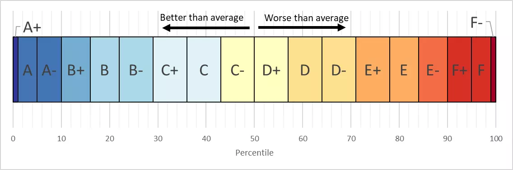

Select a Local Authority or Region
Overall Carbon Footprint
| Name | Grade | kgCO2e per person |
|---|---|---|
| Total |  |
NA |
| Electricity | |
NA |
| Gas | |
NA |
| Other Heating | |
NA |
| Car Driving | |
NA |
| Van Driving | |
NA |
| Flights | |
NA |
| Consumption of goods and services | |
NA |
This report card is customised for each Lower Super Output Area (LSOA) on the map. The title at the top gives the LSOA’s unique ID, the Office for National Statistics area classification, and the Ward name. Wards are usually larger than LSOAs, but unlike LSOAs have recognisable local names. This tab gives and overview of the LSOAs total carbon footprint, while other tabs give more detail and additional context about parts of the carbon footprint.
The bar chart shows the total carbon footprint per person in units of kilogrammes of carbon dioxide equivalent. The first column shows the footprint of the selected LSOA. The second column shows the average footprint of LSOAs in the same local authority. The third column shows the average footprint of all LSOAs in England. The fourth column shows the average footprint of LSOAs with the same area classification. The Office for National Statistics (ONS) produced the area classifications which group areas into one of 24 categories based on social, economic, geographic, and demographic factors. Thus, this column represents the average of similar areas with similar people. The horizontal black line represents the UK’s target footprint per person set out in the Committee on Climate Change’s 6th Carbon Budget, covering 2032 to 2037. It is intended to provide an indication of how far we must go in the next ten years if we are to have any chance of reaching net-zero by 2050.
Understanding the grades
Many values have been given a grade from A+ to F- to help you understand how this LSOA compares to others. The grades are relative to the average LSOA, so areas with an A+ to C- grade are better than average, while areas with a D+ to F- grade are worse than average. Most areas are close to the average, so theses grade bands are wide, representing 7% of LSOAs. Towards the extremes, the grade bands narrow, so only the best 1% of LSOAs get an A+ grade . In some cases, it is not possible to calculate a grade due to missing data, so a NA value will be shown.

Transport
Travel is a significant cause of carbon emissions and the only sector of the UK economy where emissions are still rising. To decarbonise our travel, we need to do three things. Firstly, we must reduce overall travel demand through options such as working from home and favouring domestic tourism over high carbon international flights. Secondly, we must switch a large proportion of journeys to efficient low carbon modes such as walking, cycling, and public transport. Finally, the small proportion of the remaining journeys that must be taken by car or plane must be switched to low carbon fuels (e.g. electric cars).
Cars emissions
Carbon emissions from cars can be reduced in two main ways. Firstly, by reducing the emissions per kilometre driven, by improving fuel efficiency or switching to electric vehicles. Secondly, by driving less. The committee on climate change has said that there is no way to meet our climate targets without an overall reduction in the amount we drive. While electric cars do reduce emissions, a lot of emissions are released during the manufacturing process, and they still contribute to air pollution (from particulates from their tyres and brakes), traffic congestion, and road deaths. It is thought at least 10,000 people a year are killed by air pollution in the UK. Cars are also responsible for most deaths and injuries from crashes.
Towns and cities can become car independent, but it requires investment in high-quality public transport and good walking and cycling infrastructure so that people have attractive alternatives to the car. Cars also harm other travellers; for example, they cause traffic, slowing down buses and make pedestrians and cyclists feel unsafe, which, in turn, causes people to switch from low carbon modes to driving the car, making the situation worse. It is likely that more restrictions will need to be placed on cars, such as pedestrianising city centres and removing parking.
The car and vans emissions are based on data from MOT tests. See the data page for more details.
Van emissions
Van use is a bit more complicated than car use as they are more likely to be used for work rather than personal transport. Some LSOAs have exceptionally high numbers of vans. This is because the data we have is based on the registered keeper’s address. So, a company that reports all its vans to be at a single address will bias the results for the LSOA as a whole.
Travel to Work Trips Share
Commuting makes up about 20% of all trips in the UK and is currently dominated by car travel in most areas. Yet, in many places, with the right investment, people could switch to low carbon travel options such as walking, cycling, and public transport. This data comes from the 2011 census. .
This chart’s inner ring shows the proportion of commuters by each mode to travel in the 2011 Census. Although the 2011 Census is now a decade out of date, travel patterns have been stable for many years. Currently, it is unclear how exactly how commuting will change after the coronavirus pandemic. However, a significant increase in working from home is expected in the 2021 Census.
The chart’s outer ring shows analysis from the Propensity to Cycle Tool (PCT) of the proportion of people who could cycle to work in the future. The PCT only considers direct commutes, limiting the maximum distance people can travel. So more people could cycle if they combined the bike with public transport.
Travel to Work Distance Share
While we often think of changing transport choices in terms of people and trips, it is essential to remember that the number of kilometres travelled determines emissions. This chart converts the number of people commuting by mode into an estimate of kilometres travelled each year by mode of travel.
Travel to School Mode Share
Travel to school is a frequent and usually short journey. Yet, many children are driven to school. Encouraging children to walk or cycle to school would have many benefits beyond reducing carbon emissions, such as reducing childhood obesity. In most cases, the journey to school could easily switch to walking or cycling, but parents need to be convinced that it is safe to do so. This requires making safe car-free routes for children, perhaps by introducing a low traffic neighbourhood or building a protected cycle lane. The outer ring of the chart shows the proportion of children that could cycle to school with the appropriate investment. This data comes from the Propensity to Cycle Tool.
Cars per person
The number of cars per person is strongly correlated with the amount people drive. Making new cars also has a large carbon footprint. 2% of the UK’s total carbon footprint comes from purchasing new cars and other vehicles. Cars are an extraordinarily inefficient form of transport. Private cars spend more than 95% of their time parked, and many are scrapped within ten years. So, the high carbon footprint of construction is distributed over relatively few useful journeys. In contrast, a train may be in operation for more than 12 hours a day and have a lifespan of over 40 years. High car ownership also creates other problems. The average car on the road only has one person in it, and there must be a safe distance between moving cars. This means that roads take up a lot of land. Think about the difference in the size of a typical six-lane motorway compared to a two-track railway. Yet the railway can move many more people per hour than the motorway. Once the cars reach their destination, they need parking spaces, which takes up even more land. All this paved over land for cars contributes to flooding and the urban heat island effect. It also creates land shortages and urban sprawl.
To meet our carbon targets, we will need to move away from private car ownership. More people will use walking, cycling, and using public transport as their primary modes of transport. When people do need a car, they will hire one from a car club or get a rideshare with somebody travelling in the same direction.
This data comes from the Department of Transport and is based on the location of the registered keeper of the vehicle. The number of cars has been divided by the ONS mid-year population estimates to give the number of cars per person.
Car emissions per km
Not all cars have the same carbon emissions for each kilometre they travel. Smaller and lighter cars require less energy to move, and so have lower emissions. Improvements in engine design can also reduce fuel consumption and emissions. Although there has been some progress on fuel efficiency, people have even been switching to bigger heavy cars such as SUVs which has offset much of the improvements in efficiency. Many of these SUVs are advertised as having “eco” features such as hybrid engines. However, many of these claims are misleading as SUVs are by far the most polluting form of car.
In recent years there has been growth in the number of electric cars (although the growth in SUVs is much faster). Electric cars have no tailpipe emissions but do contribute emissions from the generation of electricity. Electric cars can roughly halve emissions from cars. However, they are not a complete solution, mainly because the batteries are carbon-intensive to manufacture and heavy.
The data on average emissions comes from the Department of Transport and is based on manufacturers estimates. These should be treated with care as manufacturers have been known to under-estimate the real-world emissions from their cars.
Housing
Our houses are a significant source of carbon emissions. The two main sources of emissions are the electricity for lights and appliances and, more significantly, the energy we use to heat our homes and provide hot water.
Historical Gas Usage
About 90% of houses in England use natural gas for central heating and hot water. Natural gas is a fossil fuel and releases carbon dioxide when burnt. To meet the climate targets, we need to remove all gas boilers from homes and replace them with low carbon heating solutions. We also need to reduce the amount of heating homes need by insulating and draft proofing homes. Insulating and draft proofing can be very cost-effective. It lowers energy bills and creates local jobs for installers. Many homes now have basic insulation such as cavity wall and loft insulation. However, uptake of more complex insulation such as solid wall insulation and underfloor insulation is much lower. Improvements in insulation and gas boilers’ efficiency have resulted in a decline in gas consumption in most areas of England. There is more information about the uptake of energy saving measures on the EPC tab.
Historical Electricity Usage
Unlike gas, electricity can be a zero-carbon energy source, depending on how it is generated. In the past, the UK got most of its electricity from burning coal (a very high carbon fuel). However, we now get our electricity from a mix of gas, nuclear, and renewables such as wind and solar. This has meant that the amount of carbon dioxide emitted per unit of electricity has fallen a lot in recent years. Electricity demand has also decreased due to EU legislation requiring appliances to be more energy-efficient and replacing incandescent light bulbs with more efficient CFL and LED light bulbs. In the future, we expect electricity demand to increase as people replace gas heating with electric heat pumps and switch to electric cars. This will require the construction of new power stations, such as offshore wind farms, and more homes to generate their electricity using rooftop solar panels.
Building Type
Each neighbourhood has a different mix of house types. This affects both carbon emissions and the difficulty of energy efficient retrofit. Larger detached houses usually require more heating compared to smaller terraced houses and flats. This data comes from the 2011 Census.
Building Age
Older buildings were usually built to lower standards and so need more energy to stay warm. Buildings built before the 1930s usually have solid walls which are harder to insulate than modern cavity walled buildings. This data comes from the 2011 Census.
Heating Type
TODO
Energy Performance Certificates
Since 2008 houses in the UK have had to get an Energy Performance Certificate (EPC) when they are sold or rented. An EPC requires a qualified assessor to visit the dwelling and take measurements of the building’s construction and energy efficiency, which makes EPCs a valuable tool for understanding the energy use and carbon emissions from our homes. However, EPCs have significant problems. Research has shown that the EPC grades are not great at predicting real-world energy use and that as many as 80% of EPCs contain at least one error. EPCs are also not a representative sample of houses as they are only required under specific circumstances (e.g., when a house is sold). EPCs are likely to under-estimate the uptake of retrofit measures, as many people make home improvements just after buying a house. Thus, the EPC may be out of date shortly after it is issued. For all these reasons, EPC data should be treated with care. We have chosen to include it here as it is the best available data and helps draw attention to the low quality of housing data in the UK. For this tool, we took an extract of the EPC database from 2020 and summarised the results for each LSOA. In cases where a property had more than on EPC, only the most recent EPC was considered. Some of the data presented here are scraped from the text description written in the EPCs, so some missing data and double counting may exist. That means this data must be seen as indicative rather than conclusive.
EPC Overview
This chart indicates what proportion of homes have an EPC. This is not a perfect measure as the EPC’s defection of a property is different from the 2011 Census’s definition of a dwelling, and homes may have been constructed or demolished since 2011. However, it gives a rough measure of whether the EPC data represents a high or low proportion of all the homes in this LSOA.
EPC Score
The EPC score is the headline result rating homes on a scale from A (most efficient) to G (least efficient). To meet the climate targets, we need all homes to be A or B graded as soon as possible.
Walls Raiting
About 35% of heat is lost through a house’s walls, so insulating the walls is an excellent way to reduce energy use. Most homes built after the 1920s have cavity walls that are easy and cheap to insulate with blown glass fibre wool. However, care must be taken to install the insulation correctly to prevent damp crossing the cavity, particularly in places that get driving rain or have stone cavity walls. In these properties, expanding foam of polystyrene bead insulation can be more expensive but reduce the risk of damp and mould growth. Older homes with solid walls require either external or internal insulation. These options are more expensive than cavity wall insulation, and internal insulation requires redecoration of the rooms.
Roof Raiting
About 25% of heat is lost through the roof of the property. For homes with pitched roofs, loft insulation is one of the cheapest and easiest forms of insulation. The uptake of loft insulation has been reasonably high due to low cost and government incentives. However, many homes have less than the recommended minimum of 300mm of insulation, and flat roofs remain challenging to insulate.
Floors Raiting
About 15% of heat is lost through the floors of homes. EPCs are especially bad at recording the floor construction, so there is often a lot of missing data. Many homes built before the 1950s have suspended timber floors, which are relatively simple to insulate either by accessing the crawl space under the floor and attaching insulation to the underside or by lifting the floorboards. Homes built after the 1960s are more likely to have solid concrete floors. These are difficult to insulate as you either have to dig into the concrete slab or insulate on top of the slap, raising the floor level.
Windows Raiting
Around 10% of heat is lost through windows and doors. Most houses now have double-glazing, although many have the less efficient early forms of double-glazing. New double or triple glazing is an expensive option for energy saving. However, it is often installed as it is perceived to add value to the property.
Main Heating Type
Most homes in England have gas central heating, often with a condensing boiler. If properly installed and maintained, these have high efficiencies (above 90%). As gas is a fossil fuel, we need to replace all gas boilers with low carbon heating systems such as heat pumps as soon as possible. While heat pumps are even more efficient than gas boilers, they are significantly more expensive to install (around £10,000 for a new heat pump vs £2,000 for a new gas boiler). It is more common to find homes heated with oil boilers, storage heaters, or even coal fires off the gas grid. These heating types are both high carbon and expensive to operate, so heat pumps can be more financially attractive.
Main Heating System Rating
TODO
Heating Controls Rating
Heating controls help save energy by turning off the heating when it is not needed. Common types of heating control include thermostats, timers, and Thermostatic Radiator Valves (TRVs). Upgrading heating controls can be a low-cost way to get a small reduction in energy use.
Building Types
TODO